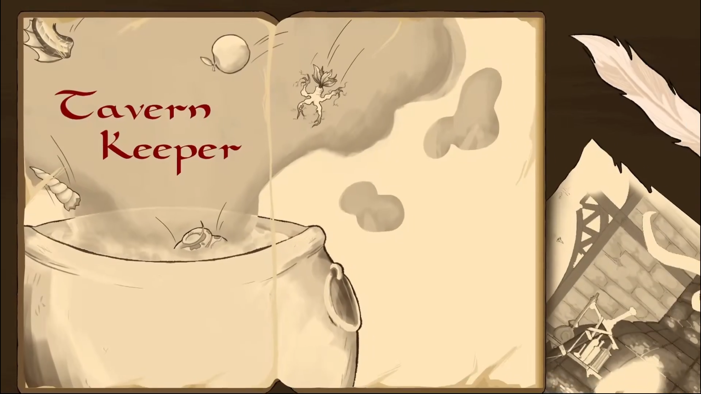
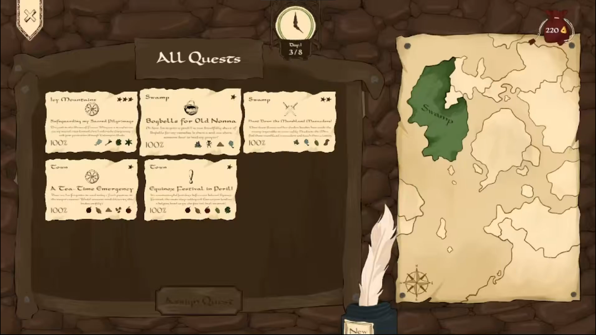
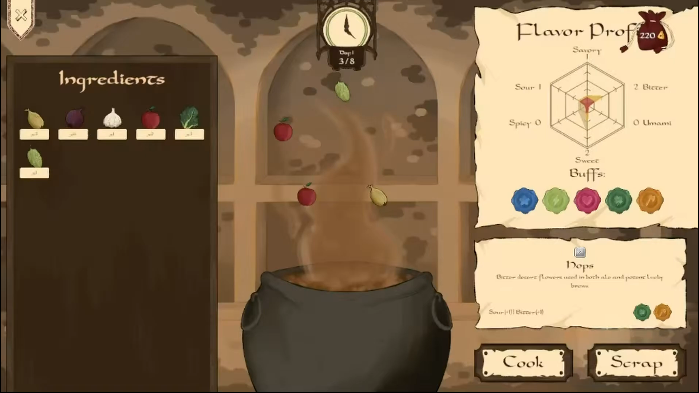
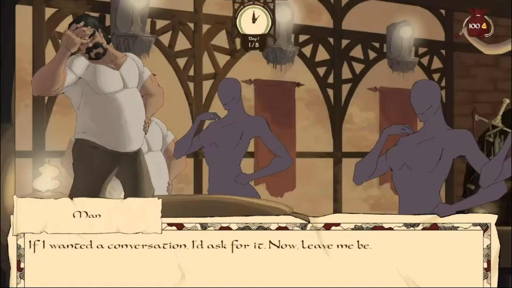
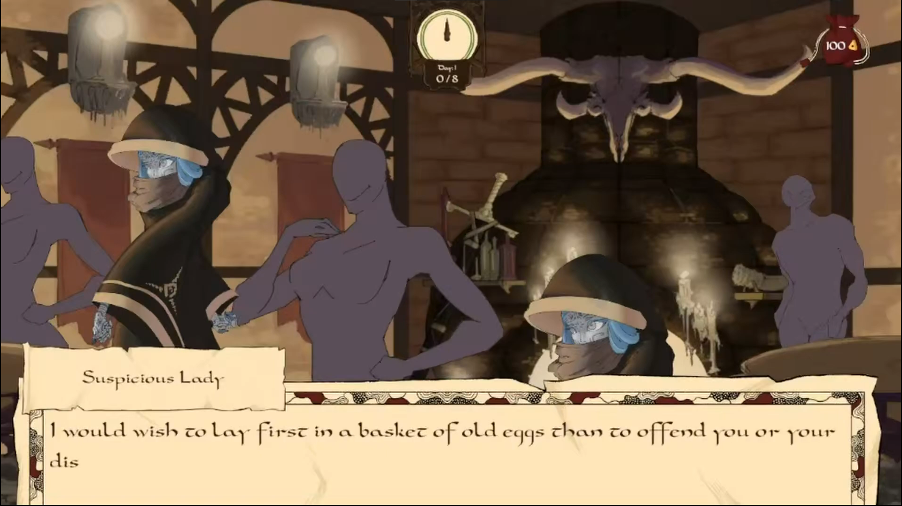

As Project Lead and Game Director, I was responsible for setting the creative vision of the project, aligning the team around it, and ensuring design decisions remained coherent across systems.
The majority of my design work centred on two deeply interconnected systems: the Cooking System and the Quest System, both of which I designed in full and documented in the Game Design Document. You can access the relevant sections of the Game Design Document through the button below. The sections I was primarily responsible for are highlighted in yellow. Other sections were developed collaboratively or by other team members.
The Cooking System is built around a multi-layered ingredient property framework. Every ingredient carries up to three properties: a Flavor Profile, a Rarity tier, and a Buff Type. And the player's task is to combine ingredients in ways that satisfy customer requests and improve adventurers' chances of success on quests. Flavor Profiles span six categories (Savory, Sour, Sweet, Spicy, Bitter, Umami) and are visualised through a hexagonal radar graph that communicates meal composition at a glance. Rarity tiers (Common, Uncommon, Rare, Legendary) determine acquisition difficulty, restock behaviour, buff strength, and how many buff types an ingredient can provide. Buff Types, including Hearty, Energizing, Hot, Cold, Lucky, Antidote, and Inspiring, each interact with specific quest types and regions, creating a strategic layer where the player must think ahead about which adventurers are going where and prepare accordingly. Meal quality is calculated from three factors: how precisely the flavor profile matches the request, the rarity of the ingredients used, and whether the requested buff types were met. Producing a 0 to 5 star rating that directly determines customer tips and quest success rates. I also designed a Cooking Skill Tree that allows players to specialise into cuisine masteries such as Master Baker, Grill Guru, Spice Connoisseur, and Regional Specialist, each offering passive and active abilities that reward focused playstyles.
The Quest System is the primary vehicle through which the cooking system's output has meaning. Quests are divided into Generic Quests, procedurally drawn from regional reward pools across four environments (Town, Desert, Icy Mountains, Swamp), and Narrative Quests, which are character-specific and unlock progressively as the player builds affinity with named characters. Every quest carries three properties: Region, Difficulty, and Type. Difficulty (Low, Medium, High) determines the base success chance and quest duration, while Type (Gathering, Investigation, Transport, Help, Exploration, Bounty) interacts with both character preferences and food buffs to influence the final probability of success. I designed the full success chance calculation pipeline: starting from the base difficulty chance, modified by character type preference, further adjusted by relationship affinity in narrative quests, and finally shaped by the meal buffs the player prepared. Outcomes range from clean successes with potential bonus rewards above 100% preparation to failures that carry consequences, injuries, resource loss, and damaged relationships. Designed to make preparation feel genuinely meaningful rather than optional.
On the programming side, I implemented the core systems that bring the design to life in Unity — including the cooking and ingredient logic, quest generation and outcome resolution, and supporting gameplay systems — working closely with the rest of the team to iterate on feel and balance throughout development.

In-game screenshot of the quest system.
In-game screenshot of the cooking system.
In-game screenshot of the dialogue with one of the main characters.
In-game screenshot of the dialogue with one of the main characters.